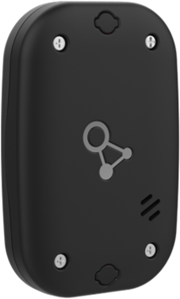
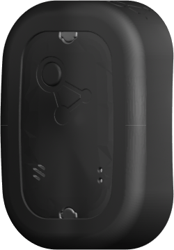
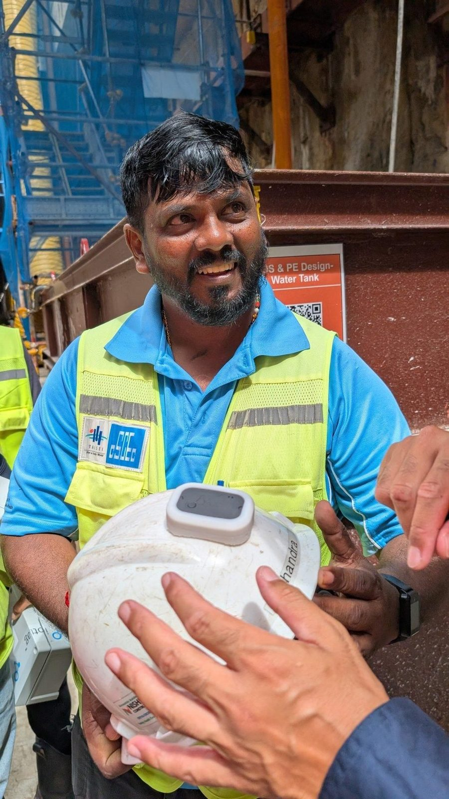
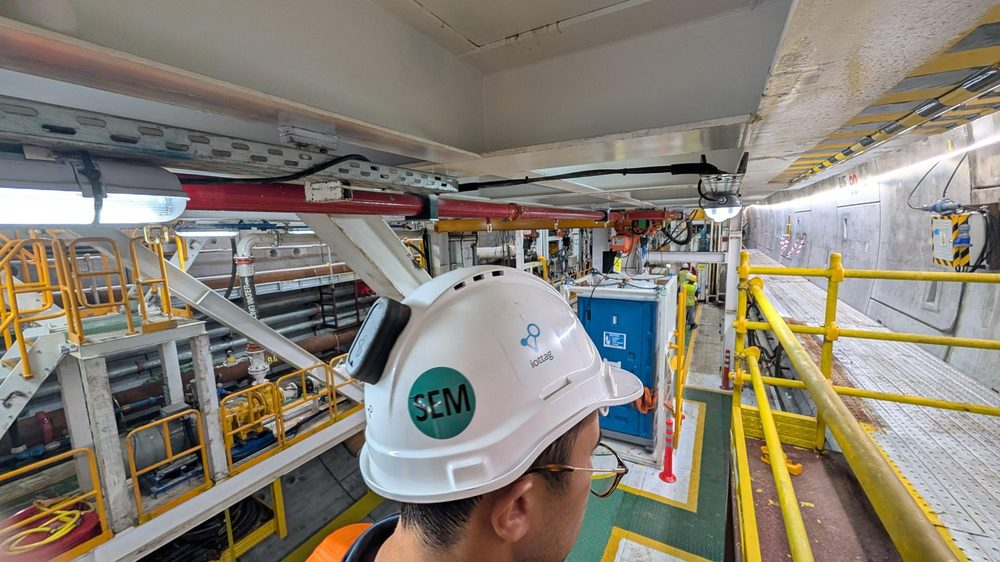
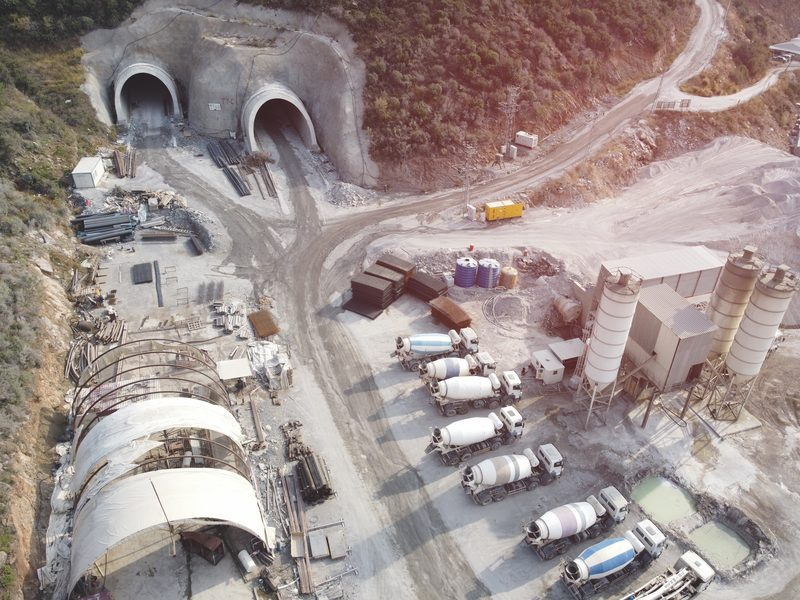
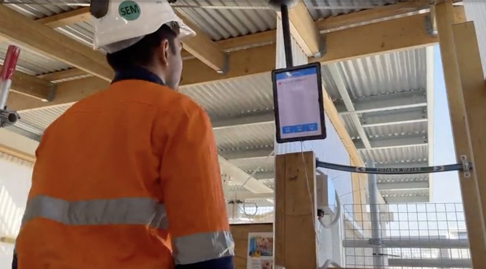
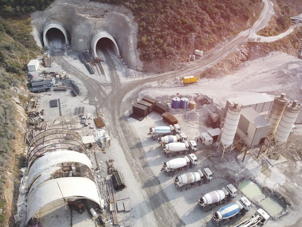
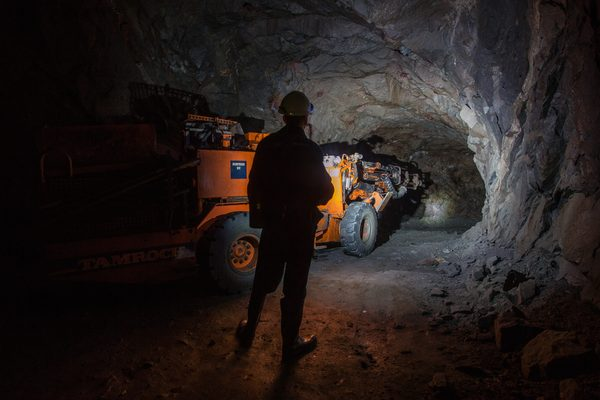

Engineered For Demanding Operations
Purpose-Built Technology Designed, Supported And Maintained By iottag
Operational environments require more than software.
They require technology that performs reliably, integrates seamlessly and can be supported over the long term.
iottag designs, engineers, supports and maintains the core components of its Operational Intelligence Platform, providing organisations with a single partner responsible for performance across the entire solution lifecycle.
From industrial wearables and positioning infrastructure through to software, analytics and operational dashboards, every component is designed to work together as part of a unified operational ecosystem.
End-To-End Accountability
Many operational technology solutions rely on multiple vendors
While each component may perform independently, organisations are often left managing complexity, integration challenges and fragmented support models.
The Vector Tag
Purpose-Built For Workforce Visibility And Operational Awareness
At the centre of the iottag technology ecosystem is the Vector Tag.
A purpose-built industrial wearable designed specifically for demanding operational environments where workforce visibility, emergency response and operational awareness are critical.
Unlike consumer-grade devices or repurposed hardware, the Vector Tag has been engineered for real-world deployment across mining, tunnelling, infrastructure and industrial environments.
Key capabilities
D81 Vector Tag

Tag in Cradle

Engineered To Support Critical Operations
Granular Positioning
High-accuracy workforce visibility across complex operational environments.
Emergency Response
SOS activation with location awareness and operational context.
Fall & Man-Down Detection
Automated identification of workforce welfare events.
Vehicle Proximity Awareness
Supports workforce and vehicle interaction management.
Tap-On / Tap-Off Access Control
Seamless workforce accountability and location confirmation.


Remote Alarming
Visual and audible alerts triggered centrally or automatically.
Impact Detection
Identification of sudden force events requiring investigation.
Rugged Industrial Design
Designed to perform in harsh operational environments.
Ultra-Long Battery Life
Minimises maintenance and operational disruption.
Supporting Statement
Designed for reliability where visibility and response matter most.
Enterprise Device Governance
Operational technology does not end with deployment.
Managing devices throughout their lifecycle is critical to maintaining reliability, security and operational performance.
iottag provides comprehensive device governance capabilities that help organisations maintain visibility and control across their technology fleet.
Device health monitoring
Fleet-wide visibility
Lifecycle management
Remote Administration
Firmware deployment
Version Control
Configuration management
Asset accountability
Operational diagnostics
Security Built Into The Ecosystem
Operational environments depend on technology they can trust.
Security considerations extend beyond software and include devices, communications, infrastructure and operational processes.
The iottag ecosystem is designed to support secure operation throughout the technology lifecycle.
Areas Of Focus
Built To Evolve
Operational environments change.
Technology must evolve alongside them.
Because iottag controls both hardware and software development, organisations benefit from a tightly integrated ecosystem capable of evolving as operational requirements change.
The operational impact is experienced throughout the production chain.
Each can create inefficiencies that influence production performance long after the blast has occurred.
Understanding these impacts provides opportunities to improve efficiency, reduce variability and increase throughput.
Faster innovation

Controlled technology roadmaps
Consistent user experiences

Improved interoperability
System-wide firmware updates
Long-term maintainability
Future platform expansion
Supporting The Operational Intelligence Ecosystem
The Vector Tag is one component of a broader Operational Intelligence platform.
Together with positioning infrastructure, software, analytics and operational dashboards, it contributes to a shared operational understanding across the environment.
Designed For Demanding Industries

Mining

Tunnelling
Construction & Infrastructure
Bridge Construction & Maintenance
Critical Infrastructure
Where operational visibility matters, reliability matters.
More Than Hardware
Technology alone does not improve outcomes
The value comes from combining engineering, operational expertise and data science to solve real-world operational challenges.
The iottag ecosystem is designed to support safer operations, improved productivity and better decision-making by creating a clearer understanding of what is happening across the operation.
Technology Designed For Real Operations
Discover how purpose-built technology, end-to-end accountability and Operational Intelligence
help organisations improve visibility, safety and operational performance.